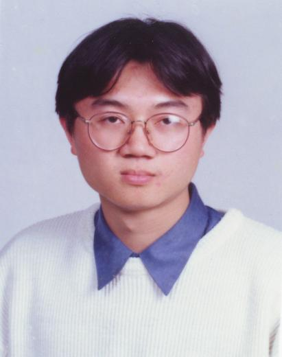

|  | 姓名: | 陳志銘 |
| 學歷: | 國立台灣科技大學 電子工程研究所 計算機科學博士 | |
| 現職: | 國立花蓮師範學院 學習科技研究所 助理教授 | |
| 經歷: | 國立花蓮師範學院 數學教育學系 助理教授 | |
| 國立台灣科技大學 電子工程系 兼任助理教授 | ||
| 中央研究院 資訊科學研究所 博士後研究 | ||
| 國立台灣師範大學 圖書資訊學研究所 兼任助理教授 | ||
| 國立台灣科技大學 纖維及高分子工程系 兼任助理教授 | ||
| 清雲技術學院 電子工程系 兼任助理教授 | ||
| 清雲技術學院 電子工程系 兼任講師 | ||
| 清雲技術學院 電機工程系 兼任講師 | ||
| 台北市立大安高級工業職業學校 電子科 專任教師 |
58
年11月26日
射手座
10/1997-1/2002 國立台灣科技大學 電子工程研究所 計算機科學 博士
10/1995-6/1997 國立台灣師範大學 工業教育研究所 電機電子工程組 碩士
10/1988-6/1993 國立台灣師範大學 工業教育學系 電子工程組 學士
2/1995-6/1997 行政院退輔會職技訓練中心 微電腦控制班 兼任職業訓練師
7/1993-5/1995 台中市團管區司令部 少尉通信官
9/1991-6/1992 國立台灣師範大學 電子學術研究社 社長
9/1992-6/1993
國立台灣師範大學 電子學術研究社 監事長
數位電子乙級技能檢定合格
電腦軟體程式設計乙丙級技能檢定監評委員
工業電子丙級技能檢定監評委員
唱歌、撞球、游泳、網球、旅遊、吃盡天下美食.....
網際網路資訊探勘及擷取、智慧型網際網路代理人系統、人工智慧及智慧型計算理論
資料庫系統設計、財經計算理論、網路線上學習
植基於遺傳演算法之小腦模型直流伺服馬達控制系統設計
Design of a Genetic-based Cerebellar Model
Articulation Controller for DC Servo Motor Control
具灰色預測學習能力之類神經網路模式及其在網際網路資訊探勘上的應用研究
Neural Networks with Grey Prediction Learning Ability and Their Applications on Web Mining
期刊論文
1.Hahn-Ming Lee, Chih-Ming Chen, Yung-Feng Lu,"A Self-Organizing HCMAC Neural Network Classifier,"IEEE Transaction on Neural Networks, vol.14, no. 1, pp. 1-13, 2003.[indexed by SCI, EI]
2.Hahn-Ming Lee, Chih-Ming Chen, Chia-Chen Tan,"An Intelligent Web-Page Classifier with Fair Feature Subset Selection,"Accepted by Applied Intelligence, 2002.[indexed by SCI, EI]
3.Chih-Ming Chen, Hahn-Ming Lee, "An Efficient Gradient Forecasting Search Method Utilizing Discrete Difference Equation Prediction Model," Applied Intelligence, vol.16, no.1, pp.43-58, 2002.[Indexed by SCI, EI]
4.Hahn-Ming Lee, Chih-Ming Chen, Tzong-Ching Huang,"Learning Efficiency Improvement of Back Propagation Algorithm by Error Saturation Prevention Method,"Neurocomputing 41,pp. 125-143, 2001.[indexed by SCI, EI]
5.Hahn-Ming Lee, Chih-Ming Chen, Jyh-Ming Chen and Yu-Lu Jou, "An Classifier with Feature Selection Based on Fuzzy Entropy,"IEEE Transaction on Systems, Man and Cybernetics Part B: Cybernetics, Vol. 31, No. 3, pp. 426-432, 2001. [indexed by SCI, EI]
6.Chin-Ming Hong,Yu-Rong Hsieh,Chih-Ming Chen, "Learning Efficiency Improvementof CMAC Neural Networks Using Grey Prediction Method," The Journal of Grey System, Vol.12,No.1, pp.73-86,2000. [indexed/abstracted by SCI, SA, MR, MA, DIALOG, INSPEC]
7.Chih-Ming Chen, Chin-Ming Hong,Yu-Rong Hsieh,"A Modeling Technique of Grey Prediction Model Using Difference Equation," The Journal of Grey System, Vol.12,No.1,pp.65-72,2000.[indexed/abstracted by SCI, SA, MR, MA, DIALOG, INSPEC]
8.Chin-Ming Hong, Chih-Ming Chen,"A New Gradient Search Method Based on Grey Prediction Theory," The Journal of Grey System, Vol.11, No.3, pp.191-208,1999. [indexed/abstracted by SCI, SA, MR, MA, DIALOG, INSPEC]
9.Chih-Ming Chen, Hong-Cen Lin, and Chin-Ming Hong,"The Design and Application of a Genetic-Based Fuzzy Grey Prediction Controller," Journal of The Chinese Grey System Association, Vol.1, No.1, pp.33-46, 1998.
10.Ling-Jiun Duh, Chih-Ming Chen, Chin-Ming Hong, and Chien-Pen Chuang, "A New Item Choosing Strategy in Computerized Adaptive Testing through Grey Prediction Method," Journal of The Chinese Grey System Association, Vol.1, No.1, pp.1-18, 1998.
研討會論文
1.Chih-Ming Chen "Incremental Personalized Web Page Mining Utilizing Self-organizing HCMAC Neural Network," Accepted by 2003 IEEE/WIC International Conference on Web Intelligence.
2.Hahn-Ming Lee, Chih-Ming Chen and Ya-Hui Chen "Personalized E-Learning System Utilizing Item Response Theory," 2002 International Computer Symposium ,Workshop on Artificial Intelligence,Dong Hwa University,Hualien, Taiwan,2002.
3.Chih-Ming Chen, Hahn-Ming Lee,"Training Linear Text Classifiers Using Gradient Forecasting Search Method for News Pages Classification,"The Seventh International Distributed Multimedia Systems, Workshop on Agent Technologies over Internet Applications (ATIA'2001),Tamkang University, Taipei, Taiwan,pp. 59-64, September 2001.
4.Hahn-Ming Lee, Chih-Ming Chen and Yung-Feng Lu,"A Self-organizing HCMAC Neural Network Classifier,"IEEE International Joint Conference on Neural Networks,Washington DC, vol.3, pp.1960-1965, 2001.
5. Hahn-Ming Lee, Chih-Ming Chen and Chia-Chen Tan,"An Intelligent Web-Page Classifier with Fair Feature-Subset Selection,"International Fuzzy Systems Association and the North American Fuzzy Information Processing Society Joint Conference (IFSA/NAFIPS], vol.1, pp. 359-400, Vancouver, Canada, July 25-28 2001.
6.Chih-Ming Chen, Chin-Ming Hong,"A Weighted Grey CMAC Neural Network with Output Differentiability," International Fuzzy Systems Association and the North American Fuzzy Information Processing Society Joint Conference (IFSA/NAFIPS], vol.2, pp. 1009-1014,Vancouver, Canada July 25-28, 2001.
7.Chih-Ming Chen, Hahn-Ming Lee, "An Efficient Gradient Forecasting Search Method Utilizing Discrete Difference Equation Prediction Model," Proceedings of International Computer Symposium ,Workshop on Artificial Intelligence,pp.43-50, 2000.
8. Hahn-Ming Lee,Chih-Ming Chen,Cheng-Wei Hwang," A Neural Network Document Classifier with Linguistic Feature Selection,"Proceedings of the Thirteenth International Conference on Industrial and Engineering Applications of Artificial Intelligence and Expert Systems, pp.550-556, 2000.
9. Hahn-Ming Lee,Chih-Ming Chen,Yu-Rong Chiang," Scalable Feature Selection for Web Pages Classification by Fuzzy Ranking Analysis," Porceedings of the Fifth National Conference on Artificial Intelligence and Applications,pp. 654-660, 2000.
10. Chin-Ming Hong,Chih-Ming Chen," An Association Memory Mapped Approach of CMAC Neural Networks Using Rational Interpolation Method for Memory Requirement Reduction," Accepted by the International Symposium on Computaional Intelligence (ISA'2000),2000.
11.Chih-Ming Chen,Hahn-Ming Lee,Chihg-Ming Ten," A Fuzzy Grey Gradient Search Algorithm," Proceedings of the Fourth National Conference on Artificial Intelligence and Aapplications, pp. 91-96, 1999.
12.Chih-Ming Chen,Hahn-Ming Lee,Yu-Rong Hsieh," A New Learning Model of Hierarchical CMAC Neural Networks,"Proceedings of the Fourth National Conference on Artificial Intelligence and Applications, pp. 17-22, 1999.
13.Chin-Ming Hong,Yu-Rong Hsieh,Chih-Ming Chen," A Forecasting Model of Discrete Difference Equation for Learning Efficiency Improvement of CMAC Neural Networks ," Proceedings of the Fourth National Conference on Grey Theory and Applications, pp.297-304, 1999.
14.Chih-Ming Chen, Chin-Ming Hong,Yu-Rong Hsieh," A Forecasting Model of Discrete Difference Equation,"Proceedings of the Fourth National Conference on Grey Theory and Applications, pp.91-108, 1999.
15.Chih-Ming Chen, Ching-Ming Ten," An Enhanced Back Propagation Algorithm Based on Grey Prediction Method,"Proceedings of the Fourth National Conference on Grey Theory and Applications, pp.74-90, 1999.
16.Hahn-Ming Lee,Tzong-Ching Huang,Chih-Ming Chen,"Learning Efficiency Improvement of Back Propagation Algorithm by Error Saturation Prevention Method," IEEE International Joint Conference on Neural Networks (IJCNN-99),Vol.3,pp.1737-1742,Washington DC, USA,1999.
17.Chih-Ming Chen,Chin-Ming Hong, "A New Gradient-based Search Method:Grey Gradient Search Method," Proceedingsof the Twelfth International Conference on Industrial and Engineering Applications of Artificial Intelligence and Expert Systems,Cario,pp.185-194,1999.
18.Hong-Kang Fan,Chih-Ming Chen,Chin-Ming Hong, "Design of Fuzzy Sliding Mode Controller Based on Cerebellar Learning Model," Proceedings of the Twelfth International Conference on Industrial and Engineering Applications of Artificial Intelligence and Expert Systems,Cario,pp.64-73,1999.
19.Hong-Kang Fan, Chih-Ming Chen, Chin-Ming Hong, "Design of Genetic-based Fuzzy Controller," Proceedings of the IASTED International Conference on Control and Applications, August 12-14, Honolulu, Hawaii, USA, pp.98-102, 1998.
20.Chien-Pen Chuang,Chien-Ming Hong and Chih-Ming Chen,"A Genetic-based Cerebellar Model Articulation Controller for DC Servomotor Control," Proceedingsof the IASTED International Conference on Applied Modelling and Simulation, pp.245-252,1997.
專書著作
1.陳志銘、林永鎮，"Internet
網路的架設與應用實務"，宏友圖書出版社，1997。
參加國際會議
1.2003年10月13日-2003年10月17日 獲國科會補助參加由國際電機電子工程學會(IEEE)與智慧型網路計算學會(WIC)於加拿大哈里法克斯(Halifax)所舉辦之2003年智慧型網路計算國際研討會，並發表論文。
2.1999年7月10日-1999年7月16日獲教育部補助參加由國際類神經網路學會(INNS)與國際電機電子工程學會(IEEE)於美國華盛頓D.C.所舉辦之1999年類神經網路國際研討會，並發表論文。
主持國科會計畫
1.以試題反應理論為基礎建構具個人化學習機制之網路線上學習系統，國科會計畫編號 NSC 92-2520-S-026-002-。
E-Mail Address:cmchen@mail.nhltc.edu.tw